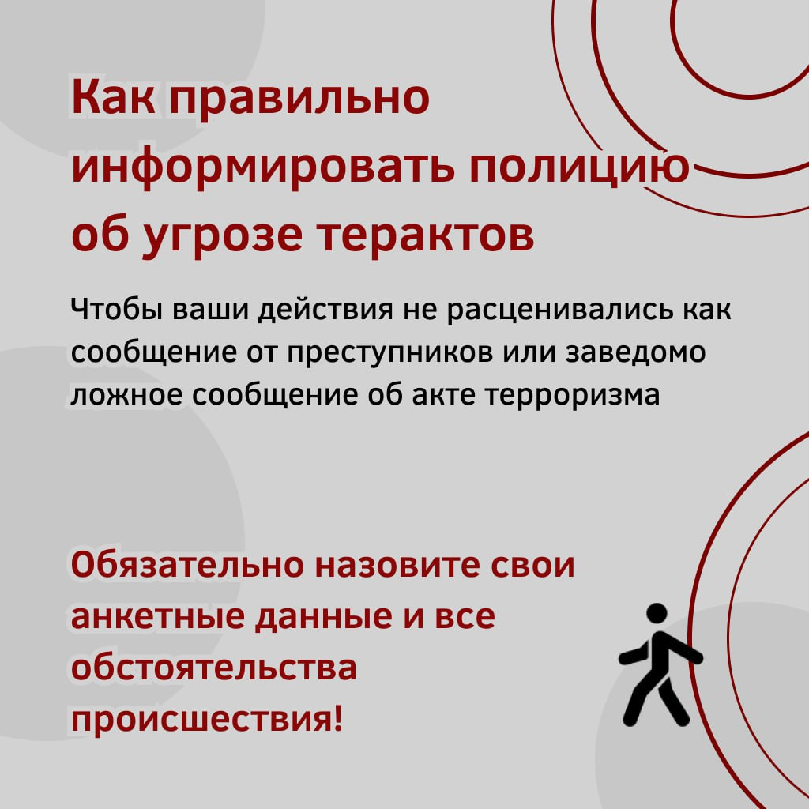
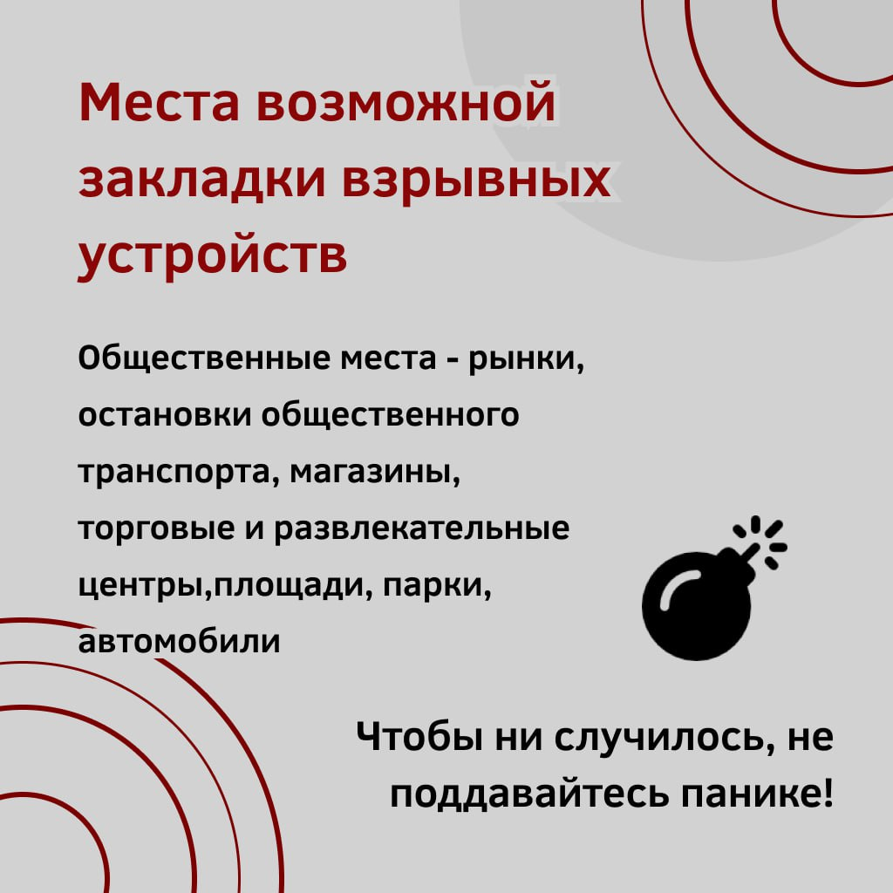

При обьявлении террористической опасности рассылаются оповещения из официальных источников. Необходимо точно представлять свое поведение и действия в условиях террористической опасности, психологически быть готовым к самозащите.
Общие рекомендации гражданам по действиям при угрозе совершения террористического акта:
Обращайте внимание на подозрительных людей, предметы, на любые подозрительные мелочи, сообщайте обо всем подозрительном сотрудникам правоохранительных органов;
никогда не принимайте от незнакомцев пакеты и сумки, не оставляйте свой багаж без присмотра;
попав в переполненное людьми помещение, заранее определите, какие места при возникновении экстремальной ситуации наиболее опасны (проходы между секторами на стадионе, стеклянные двери и перегородки в концертных залах и т.п.), обратите внимание на запасные и аварийные выходы, мысленно проделайте путь к ним;
всегда узнавайте, где находятся резервные выходы из помещения;
в случае эвакуации возьмите с собой набор предметов первой необходимости и документы.

Избегайте больших скоплений людей;
при возникновении паники старайтесь сохранить спокойствие и способность трезво оценивать ситуацию;
старайтесь не поддаваться панике, что бы ни произошло.
Не присоединяйтесь к митингующим "ради интереса", узнайте, санкционирован ли митинг, за что агитируют выступающие люди;
во время массовых беспорядков постарайтесь не попасть в толпу, как участников, так и зрителей, так как вы можете попасть под действия бойцов спецподразделений;
не вступайте в незарегистрированные организации, так как участие в мероприятиях таких организаций может повлечь уголовное наказание.

При обнаружении подозрительного предмета:
Если обнаруженный предмет не должен, по вашему мнению, находиться в этом месте, не оставляйте этот факт без внимания;
в общественном транспорте опросите людей, находящихся рядом. Постарайтесь установить, чья она и кто ее мог оставить. Если хозяин не установлен, немедленно сообщите о находке водителю;
в подъезде своего дома опросите соседей, возможно, он принадлежит им; если владелец не установлен, немедленно сообщите о находке в ваше отделение полиции;
в учреждении немедленно сообщите о находке администрации или охране;
внешний вид предмета может скрывать его настоящее назначение. В качестве камуфляжа для взрывных устройств используются самые обычные бытовые предметы: сумки, пакеты, коробки, игрушки и т.п.
Не предпринимайте самостоятельно никаких действий с находками или подозрительными предметами, которые могут оказаться взрывными устройствами, это может привести к их взрыву, многочисленным жертвам и разрушениям.